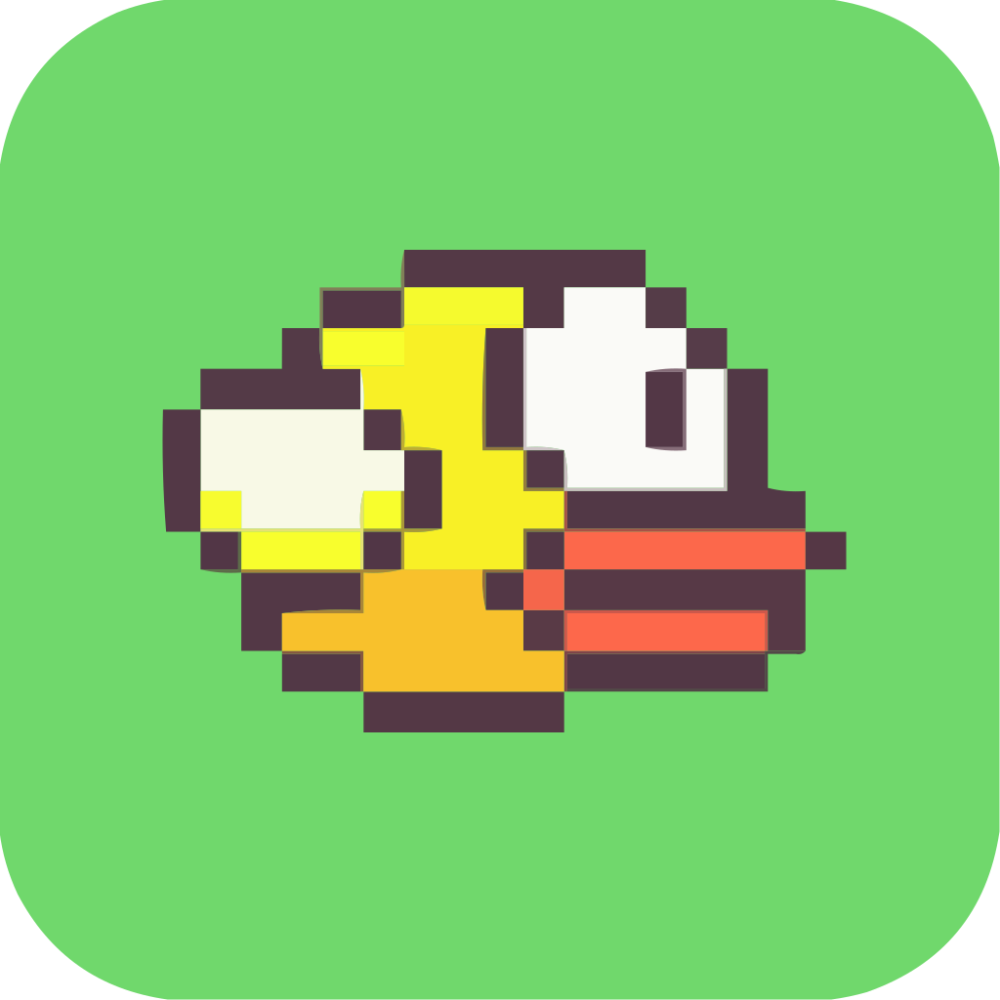

Flappy Bird, a mobile gaming sensation unleashed by Vietnamese developer Dong Nguyen in 2013, quickly soared to unprecedented heights of popularity. With its deceptively simple mechanics and retro-inspired graphics, the game captivated players worldwide. In Flappy Bird, players guide a pixelated bird through a series of green pipes by tapping the screen, with each tap causing the bird to flap its wings and ascend. The objective is to navigate through as many gaps between pipes as possible, earning points for each successful pass. However, the challenge lies in the game's relentless difficulty, as the gaps narrow and the speed increases with each progression, leading to frequent collisions and frustration.
Despite its minimalistic design, Flappy Bird's addictive nature fueled its meteoric rise to fame, captivating players with its easy-to-learn, difficult-to-master gameplay. The game's global appeal transcended age and demographics, spawning countless memes, challenges, and even merchandise. However, its immense success also brought scrutiny and controversy, leading to the developer's decision to remove the game from app stores in 2014. Nevertheless, Flappy Bird's legacy endures, with fans nostalgically reminiscing about their attempts to conquer its relentless obstacles, cementing its status as a cultural phenomenon in the annals of mobile gaming history.